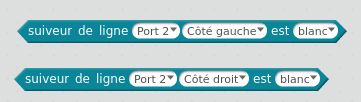
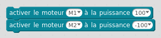

Pour suivre une ligne, il faut utiliser les tests suivants:

Pour chaque côté, le suiveur de ligne permet de savoir si le sol est blanc ou noir. Il y a deux capteur, un à gauche et un à droite.
En utilisant l´état du capteur, on peut détecter où se trouve le robot:
Pour suivre une ligne, on peut utiliser la méthode suivante:
Pour faire tourner le robot sur place, sans avancer, on peut utiliser la séquence suivante qui active un moteur dans un sens et l'autre moteur dans l'autre sens:

Ecrire le programme de suivi de ligne dans mblock.
Téléverser le programme dans le robot et tester le robot sur le tapis avec la ligne noire.
Modifier le programme du défi 1 pour détecter un obstacle sur le parcours (avec le capteur de distance).
Si un obstacle est détecté, faire demi-tour et suivre la ligne dans l'autre sens.